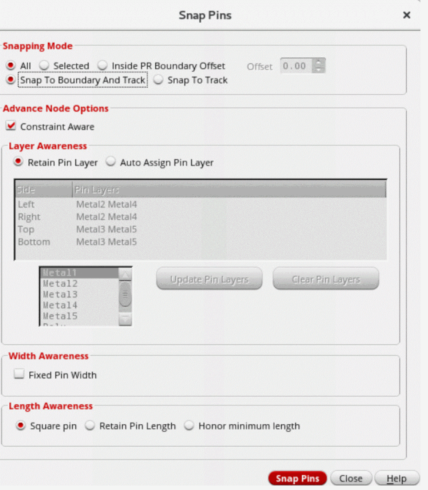
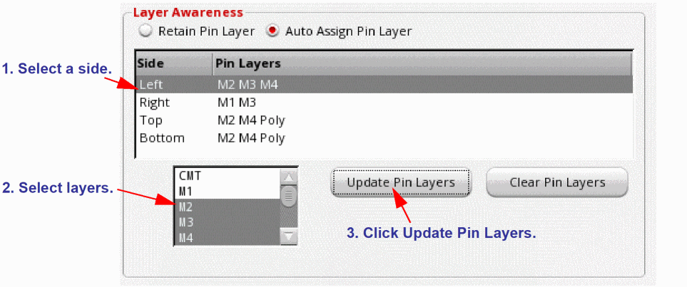

Snapping Soft Block Pins
The Move, Reshape, Stretch, and Chop commands have options that let you snap boundaries and pins automatically to grid during interactive editing. To snap pins without accessing these commands, use the Connectivity – Pins – Snap Pins command. This snaps both top-level and level-1 pins to the grid appropriate to the block type you are editing.
If the pins are placed outside the PR boundary, by default, they will be snapped to the PR boundary even if the Snap to Boundary option is OFF. This is because the grids outside the PR boundary are not initialized and the nearest grid that the pin locates, is the PR boundary.
Snap Behavior for Analog Pins
Situation 1: The pin size is a multiple of the manufacturing grid but the pin is located off grid.
Such pins are snapped to the nearest manufacturing grid.
Situation 2: The pin size is not a multiple of the manufacturing grid and the pin is located off grid.
The Lower Left Point (LLP) of the pin is snapped to the nearest manufacturing grid. Optionally, the pin can be resized and snapped to the nearest manufacturing grid.
Snap Behavior for Digital Pins
The routing grid may be square or rectangular in shape. Pin snapping behavior is the same, regardless of the shape of the routing grid.
Situation 1: The pin size is an even multiple of the manufacturing grid but the pin is not centered on the routing grid.
Such pins are centered to the “nearest” routing grid.
Situation 2: The pin size is an odd multiple of the manufacturing grid and the pin is not centered on the routing grid.
Such pins are centered to the “nearest” routing grid. Optionally, the pin can be resized and aligned with the nearest manufacturing grid.
Situation 3: Pin size is not a multiple of the manufacturing grid and the pin is not centered on the routing grid.
The pin is centered to the nearest routing grid. Optionally, the pin can be resized and aligned with the nearest manufacturing grid.
Related Topics
Snapping Soft Block Pins to Grid
Use the Snap Pins command to snap top-level and level-1 soft block pins to the nearest grids. This command works on both preselected and postselected pins.
At advanced nodes, pins are snapped to nearest WSP tracks. The options in the Layer Awareness, Width Awareness, and Length Awareness sections, which are available only at advanced nodes, let you control pin snapping.
The Advance Node Options section is available only when there are WSP tracks in the design.
To snap soft block pins to appropriate grids:
-
Choose Connectivity – Pins – Snap Pins.
The Snap Pins form appears.
 - In Snapping Mode, select how the pins are to be snapped from the available options: All (default), Selected, Inside PR Boundary Offset, Snap To Boundary And Track, and Snap To Track.
-
Select Constraint Aware in the Advance Node Options section to ensure that the following constraints are honored during pin snapping:
Wire type, width, order, bus, side, edge, pin group guide, layer per side, blockages, and preplaced pins. - In the Layer Awareness section, specify the layers on which the pins are to be placed after they are snapped.
- Select Retain Pin Layer to snap pins to the nearest WSP tracks, while retaining the pins in their original layers and honoring all applicable pin constraints.
-
Select Auto Assign Pin Layer to assign pin layers to the sides of the block.
The first box has two columns, Side and Pin Layers. Side lists the four sides of soft blocks. Pin Layers assigns pin layers to these sides. The sequence in which the layers are listed determines the layer priority for pin snapping.
To add or update the pin layer for a side:- Select the required side in the first box.
- Select one or more layers in the second box.
- Click Update Pin Layers. The selected pin layer is displayed in the Pin Layers column in the first box.
- Click Clear Pin Layers to clear the pin layers of the selected side.
During pin snapping, when a pin layer is switched, the pin label associated with the pin is also switched to the same layer on which the pin is changed. However, if the pin layer is not switched, the layer of the pin label will remain unchanged. Ensure that the pin label is associated with the pin. - Select Fixed Pin Width in the Width Awareness section to snap pins to the nearest WSP tracks with matching or higher pin widths.
- In the Length Awareness section, specify the length of the snapped pins by selecting one of the options: Square Pin, Retain Pin Length, and Honor Minimum Length.
- Click Snap Pins.
All the top-level and level-1 pins are snapped to appropriate grids.
The pins with placement status as Fixed are also snapped, and their statuses are retained as Fixed.
Related Topics
Return to top